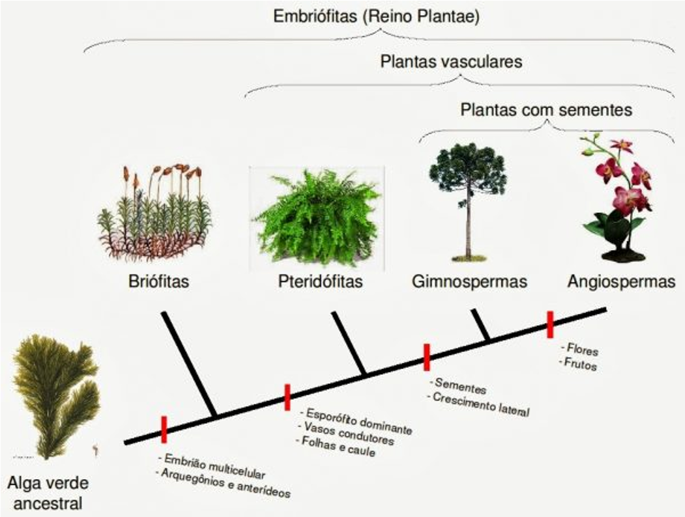
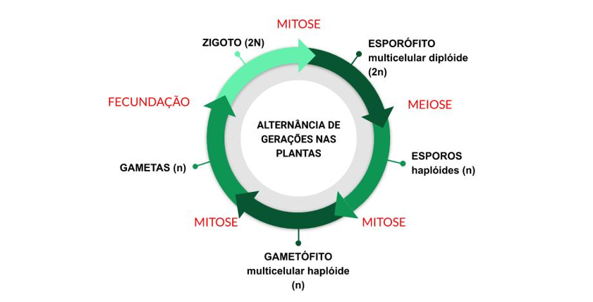

Características
- Organismos eucarióticos pluricelulares;
- Células providas
de parede celular - celulose;
- Vacúolos grandes;
-
Pigmentos fotossintéticos localizados em plastos;
- Nutrição
predominantemente fotossintética;
- Imóveis, fixas ao
substrato;
- Reprodução sexuada com alternância de gerações.

Ciclo Haplonte-Diplonte ou Haplodiplobionte
- Plantas e maioria das algas possui o ciclo com a alternância de
gerações;
- Alterna uma fase haplóide (n) produtora de
gametas e uma diplóide (2n), produtora de esporos.
-
Fase diplóide: esporófito, duração varia conforme
a espécie considerada. (Os esporos são haplóides (n));
-
Produtores de gamentas: gametófitos, representam
a geração gametofítica. Os gametas se fundem, dando origem a um
organismo diplóide (2n), o zigoto, que cresce e se desenvolve,
dando origem à fase esporofítica.
